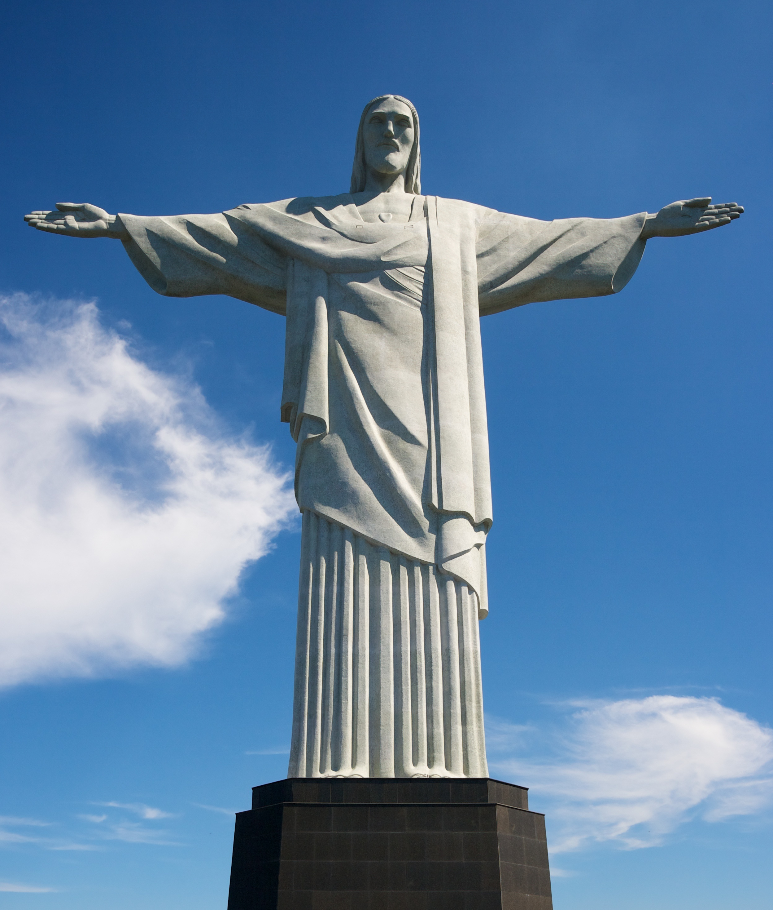

- Rio de Janeiro
- Praia de Matinhos
- Cataratas do Iguaçu
- Lua
- Museu Oscar Niemayer
Há alguns dias, eu e um grupo de amigos decidimos fazer uma viagem inesquecível ao Rio de Janeiro.Planejamos cada detalhe com entusiasmo, desde a escolha das datas até a lista de lugares que gostaríamos de visitar.Finalmente, o grande dia chegou, e embarcamos no avião rumo ao Rio, ansiosos para explorar essa cidade incrível.
Assim que aterrissamos no Aeroporto Internacional do Rio de Janeiro-Galeão, fomos recebidos pela brisa quente e pelo famoso Cristo Redentor observando a cidade do alto do morro do Corcovado. Decidimos começar nossa aventura subindo até o Cristo, e a vista panorâmica da cidade e da Baía de Guanabara era de tirar o fôlego. Ficamos lá por horas, maravilhados com a beleza natural do Rio.
Nos dias seguintes, exploramos as praias icônicas da cidade, como Copacabana e Ipanema. Passamos horas tomando sol, nadando nas águas azuis e saboreando a deliciosa comida de rua, incluindo açaí, pastéis e coxinhas. À noite, experimentamos a animada vida noturna do Rio, dançando ao som de música ao vivo e saboreando caipirinhas nos bares da Lapa.
Uma das experiências mais memoráveis foi a visita ao Pão de Açúcar. Subimos de bondinho até o topo, onde tivemos uma visão deslumbrante do pôr do sol sobre a cidade e a baía. Era como se estivéssemos no topo do mundo, admirando a cidade iluminada à noite.
No meio da viagem, decidimos fazer uma trilha na Floresta da Tijuca. A trilha nos levou a uma cachoeira escondida, onde pudemos nos refrescar da calorosa caminhada. A exuberante vegetação tropical e a rica fauna da floresta nos proporcionaram uma experiência de natureza única.
A viagem à praia de Matinhos foi uma emocionante aventura desde o momento em que chegamos à cidade costeira do estado do Paraná. Partimos cedo pela manhã, ansiosos para desfrutar do sol, da areia e do mar.
Ao chegarmos à praia, ficamos impressionados com a beleza natural que nos cercava. As águas cristalinas do oceano se estendiam até onde a vista alcançava, e as palmeiras balançavam suavemente ao vento. Montamos nosso guarda-sol e estendemos as toalhas de praia na areia dourada.
As crianças imediatamente correram em direção às ondas, rindo e brincando enquanto as águas mornas do Atlântico banhavam seus pés. Enquanto isso, os adultos desfrutavam de uma bebida refrescante à beira-mar, sentindo o calor do sol em seus rostos.
A praia de Matinhos é conhecida por suas ondas, e logo alguns de nós nos aventuramos a pegar algumas delas com pranchas de bodyboard. As ondas proporcionaram horas de diversão e adrenalina, e muitas risadas ecoaram na praia à medida que tentávamos domar as ondas.
À tarde, fizemos um passeio pela orla da cidade, explorando os quiosques e restaurantes que ofereciam uma variedade de frutos do mar frescos. Optamos por um restaurante beira-mar e saboreamos um delicioso almoço com vista para o oceano, enquanto o sol começava a se pôr.
Minha viagem para as Cataratas do Iguaçu foi uma aventura inesquecível que me deixou maravilhado com a beleza natural e a grandiosidade desse destino. O planejamento começou meses antes, com a pesquisa de informações sobre a região e a preparação de todos os documentos necessários, visto que a área é compartilhada pelo Brasil e Argentina.
Ao chegar ao aeroporto de Foz do Iguaçu, no Brasil, fui imediatamente envolvido pela atmosfera tropical e a expectativa do que estava por vir. O transporte para o Parque Nacional do Iguaçu foi rápido e bem organizado. Eu optei por começar minha jornada pelo lado brasileiro das cataratas.
Assim que entrei no Parque Nacional, a visão das quedas d'água começou a surgir, e minha emoção aumentou a cada passo. A passarela que se estendia ao longo do rio Iguaçu oferecia vistas deslumbrantes das cataratas, que se estendiam diante de mim em uma sucessão de quedas majestosas. O rugido da água era ensurdecedor, e a névoa refrescante tocava meu rosto enquanto eu admirava esse espetáculo da natureza.
Uma das experiências mais emocionantes foi a proximidade com a Garganta do Diabo. Ao caminhar sobre a passarela que leva até a plataforma de observação, fui cercado por uma cortina de névoa e pelo som ensurdecedor das águas despencando a centenas de metros de altura. A vista da Garganta do Diabo é simplesmente indescritível, uma visão que permanecerá gravada em minha memória para sempre.
No dia seguinte, cruzei a fronteira para a Argentina, onde explorei o Parque Nacional Iguazú. Lá, as trilhas me levaram bem perto das cataratas, proporcionando uma experiência completamente diferente. Caminhar pela floresta subtropical e observar a vida selvagem local, como quatis e pássaros exóticos, acrescentou uma dimensão única à minha viagem.

Minha viagem à Lua foi uma experiência que transcendeu todas as minhas expectativas e representou um momento verdadeiramente histórico para a humanidade. Essa jornada, que um dia foi apenas um sonho distante, tornou-se uma realidade graças aos avanços da tecnologia espacial.
O processo de preparação para a viagem lunar foi longo e meticuloso. Antes mesmo de embarcar na espaçonave, passei por extensos treinamentos físicos e mentais para me adaptar às condições extremas do espaço e aprender a operar as complexas máquinas que nos levariam até nosso destino final. Afinal, viajar para a Lua não é uma aventura comum; é uma empreitada que exige coragem, determinação e uma incrível capacidade de trabalho em equipe.
O dia da partida finalmente chegou. Enquanto a espaçonave decolava da Terra, senti uma mistura de emoções: ansiedade, excitação e um profundo senso de responsabilidade. A medida que nos distanciávamos do nosso planeta natal, a vista da Terra se tornava cada vez mais distante, uma esfera azul suspensa no vazio do espaço.
Após alguns dias de viagem, chegamos à órbita lunar. A visão da Lua de perto era simplesmente deslumbrante. Sua superfície estava repleta de crateras e montanhas, uma paisagem alienígena que parecia saída de um sonho. A sensação de flutuar em gravidade zero e olhar para a Lua através da janela da espaçonave era surreal.

Minha visita ao Museu Oscar Niemeyer (MON), em Curitiba, Brasil, foi uma experiência cultural enriquecedora que me permitiu apreciar não apenas a arquitetura impressionante do prédio, mas também a riqueza das obras de arte que ele abriga. Conhecido carinhosamente como "Museu do Olho" devido à sua forma peculiar, o MON é um dos marcos arquitetônicos mais icônicos do Brasil, projetado pelo renomado arquiteto brasileiro Oscar Niemeyer.
Ao entrar no museu, fui imediatamente impressionado pela arquitetura única do edifício. Sua estrutura moderna e curvilínea se destaca em meio à paisagem urbana de Curitiba. O "olho" gigante, uma cúpula de vidro que serve como entrada principal, convida os visitantes a explorar o interior e descobrir o tesouro de arte e cultura que o museu abriga.
O MON possui uma vasta coleção de arte contemporânea e moderna, com obras de artistas brasileiros e internacionais. Pude apreciar pinturas, esculturas, fotografias e instalações que refletiam uma ampla gama de estilos e movimentos artísticos. A diversidade das exposições era cativante, desde peças abstratas e experimentais até obras que abordavam questões sociais e culturais profundas.
Uma das áreas mais notáveis do museu é a Sala Niemeyer, um espaço amplo e luminoso onde a arquitetura se une à arte de forma harmoniosa. Aqui, a visão da imensa cúpula de vidro é especialmente impressionante, permitindo que a luz natural ilumine as obras de arte. Passei um tempo contemplando as esculturas expostas e refletindo sobre a interação entre o ambiente e a arte.
Além das exposições permanentes e temporárias, o MON oferece uma variedade de atividades culturais, como palestras, workshops e eventos especiais. Essas oportunidades permitem uma compreensão mais profunda da arte e da cultura brasileira, enriquecendo a experiência dos visitantes.


- Nova York
- Morro Anhangava
- Pão de Açucar
- Havaí
- Espaço
Minha viagem para Nova York para ver a Estátua da Liberdade foi uma experiência verdadeiramente inesquecível. Desde o momento em que pus os pés na cidade que nunca dorme, eu sabia que estava prestes a vivenciar algo extraordinário.
O planejamento da viagem começou meses antes, e a expectativa só aumentava a cada dia que se passava. Finalmente, chegou o dia da partida. O aeroporto estava cheio de pessoas animadas e ansiosas para embarcar em suas próprias aventuras. O voo foi longo, mas a excitação pelo que estava por vir me manteve acordado.
Assim que o avião pousou no Aeroporto Internacional John F. Kennedy, eu senti uma energia única no ar. A cidade estava viva, com seus arranha-céus imponentes e táxis amarelos que se moviam freneticamente pelas ruas. Nova York é um lugar onde a diversidade cultural é celebrada e onde o mundo se encontra.
Minha primeira parada foi no hotel, que tinha uma vista deslumbrante da cidade. À noite, as luzes de Manhattan brilhavam como estrelas no céu urbano. Mas o que realmente me fez levantar cedo todas as manhãs foi a promessa de ver a Estátua da Liberdade de perto.
O dia em que visitei a Estátua da Liberdade estava ensolarado e com um céu azul vibrante. A emoção era palpável quando embarquei no ferry que me levaria à ilha de Liberty Island. À medida que nos aproximávamos da estátua, ela crescia diante dos meus olhos, majestosa e imponente.
Ao desembarcar, fiquei maravilhado com os detalhes da estátua. A tocha que ela segura alta no ar, simbolizando a liberdade, era ainda mais impressionante de perto. Caminhar ao
redor da base da estátua e observar os poemas e inscrições que celebram a liberdade e a imigração foi uma experiência tocante.
Subir o Morro do Anhangava é uma experiência emocionante e desafiadora, oferecendo uma vista deslumbrante e uma aventura memorável. O Morro do Anhangava está localizado no Paraná, Brasil, e é uma das montanhas mais populares para a prática de escalada na região. Aqui está uma descrição hipotética de como pode ser subir o Morro do Anhangava:
A jornada para subir o Morro do Anhangava começou cedo pela manhã, quando nos encontramos com nosso grupo de escalada e nosso guia experiente. Todos nós estávamos animados e ansiosos para enfrentar o desafio que estava pela frente. O sol estava apenas começando a iluminar o céu quando começamos a trilha.
A trilha inicial era relativamente tranquila, passando por uma vegetação exuberante e cruzando riachos cristalinos. À medida que ganhávamos altitude, o terreno começava a ficar mais íngreme e rochoso, e a adrenalina aumentava. Nossos equipamentos de escalada, incluindo capacetes, cordas e mosquetões, eram verificados com cuidado para garantir nossa segurança.
À medida que subíamos, a paisagem ao redor começava a se revelar. A vista panorâmica da região se tornava cada vez mais impressionante, com as cidades e montanhas ao redor se estendendo diante de nós. No entanto, a subida também se tornava mais desafiadora, com trechos íngremes e rochas que exigiam habilidade e concentração.
Após algumas horas de escalada, finalmente alcançamos o cume do Morro do Anhangava. A sensação de realização foi indescritível. Estávamos no topo de uma das montanhas mais icônicas da região, com uma vista de tirar o fôlego de todos os lados. O horizonte se estendia até onde a vista alcançava, e podíamos ver o mundo lá embaixo, parecendo pequeno e distante.
Passamos algum tempo aproveitan./cristo-redentor.jpgdo o momento e tirando fotos para registrar nossa conquista. Depois, começamos a descida com a mesma atenção e cuidado que empregamos na subida.
Subir o Morro do Anhangava é uma experiência desafiadora e gratificante que requer preparação, habilidade e determinação. No final, a sensação de estar no topo e apreciar a vista panorâmica faz todo o esforço valer a pena, tornando-se uma aventura que será lembrada para sempre.

Minha viagem ao Pão de Açúcar, uma das atrações mais emblemáticas da cidade do Rio de Janeiro, foi uma experiência verdadeiramente fascinante. O Pão de Açúcar, com sua icônica formação rochosa e vistas panorâmicas deslumbrantes, prometeu uma aventura que não me decepcionou.
Minha jornada começou no sopé da montanha, onde comprei os ingressos para o bondinho que me levaria até o topo do Pão de Açúcar. Conforme subia, pude sentir minha ansiedade se misturar com a empolgação de estar prestes a explorar uma das maravilhas naturais do Brasil.
A medida que o bondinho subia, as vistas do Rio de Janeiro se desdobravam diante dos meus olhos. A cidade se estendia, com suas praias de areias douradas, as águas azul-turquesa do oceano e a agitação das ruas. Mas à medida que o Pão de Açúcar se aproximava, minha atenção se voltava para a majestosa montanha que se erguia imponente.
Ao chegar ao topo, fui recebido por uma vista espetacular de 360 graus. Pude ver a Baía de Guanabara, o Cristo Redentor no alto do Corcovado, a Praia de Copacabana e muitos outros pontos turísticos da cidade. Cada ângulo revelava uma perspectiva única e encantadora.
Minha viagem ao Havaí foi uma experiência verdadeiramente mágica e enriquecedora. Conhecido como o "Paraíso na Terra," o Havaí não decepcionou em proporcionar uma mistura única de beleza natural, cultura vibrante e aventuras emocionantes.
Minha aventura começou no Aeroporto Internacional de Honolulu, na ilha de Oahu. Desde o momento em que desembarquei, fui envolvido pela calorosa atmosfera havaiana. A saudação de "aloha" e os sorrisos dos locais me deram as boas-vindas a um lugar onde a hospitalidade é uma parte intrínseca da cultura.
Comecei minha viagem explorando as deslumbrantes praias de Oahu. A Praia de Waikiki era uma visão de cartão postal, com suas areias douradas, águas cristalinas e surfistas dominando as ondas. Passei horas nadando, relaxando e observando o pôr do sol deslumbrante enquanto luaus coloridos e música havaiana ecoavam ao fundo.
Minha visita a Pearl Harbor foi emocionante e educativa. O USS Arizona Memorial e o Museu de Pearl Harbor lembram os eventos que moldaram a história do Havaí e dos Estados Unidos durante a Segunda Guerra Mundial. A serenidade do memorial flutuante contrasta fortemente com a tragédia que ocorreu ali.

Minha viagem ao espaço foi uma experiência extraordinária que transcendeu todas as minhas expectativas e me levou a uma fronteira onde a maioria das pessoas nunca ousou imaginar estar. A aventura de viajar para o espaço é uma conquista monumental da humanidade e uma experiência que me tocou profundamente.
Antes de minha jornada ao espaço, passei por um rigoroso treinamento que abrangeu diversos aspectos, desde o preparo físico até o treinamento técnico. A adaptação à microgravidade, o uso de trajes espaciais e o funcionamento de sistemas complexos foram algumas das habilidades que tive que dominar. A preparação mental também foi fundamental, pois a experiência no espaço exige resiliência emocional.
O momento do lançamento foi uma experiência indescritível. Sentado na cápsula da espaçonave, senti a vibração e o rugido ensurdecedor dos motores enquanto a Terra gradualmente se afastava. A aceleração intensa me pressionou contra o assento, e o peso da gravidade terrestre desapareceu à medida que entrávamos na órbita.
Uma vez em órbita, fui saudado por uma vista deslumbrante da Terra do espaço. A visão do nosso planeta suspenso no vácuo do espaço foi uma experiência transcendental. A vastidão do espaço e a beleza frágil da Terra me fizeram perceber a importância de proteger nosso lar.
Minha viagem incluiu uma estadia na Estação Espacial Internacional (EEI), onde participei de experimentos científicos, estudos de microgravidade e exercícios diários para manter a saúde física. A rotina na EEI era rigorosa, mas a sensação de flutuar livremente e observar o planeta a cada 90 minutos era incrivelmente gratificante.
Depois de um período no espaço, a volta para casa envolveu a reentrada na atmosfera terrestre, uma experiência intensa de calor e pressão. Finalmente, a cápsula pousou com segurança, e a emoção de estar de volta ao nosso planeta foi avassaladora.
Minha viagem ao espaço foi uma jornada que mudou minha perspectiva sobre o mundo e nosso lugar no universo. Foi uma lembrança da incrível capacidade da humanidade de explorar o desconhecido e um testemunho de como a ciência e a tecnologia podem nos levar além dos limites da Terra. Essa experiência foi uma honra e um privilégio, e espero que mais pessoas possam ter a oportunidade de vivenciar o espanto e a admiração que o espaço proporciona.
← Voltar